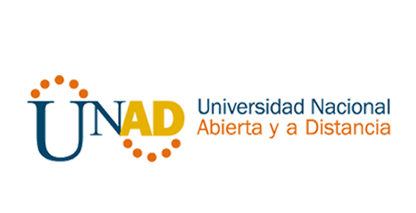

|
CSS Y PROPIEDADES BASICAS DE DISPLAY CSS. INLINE, BLOCK, NONE,LIST-ITEM |
Nombre: Catherin SanchezPrograma: Ingenieria de SistemasFecha: 06 de Septiembre de 2020Correo: cjsanchezc@unadvirtual.edu.coTelefono: 3103884630Skype: cathesanchezACTIVIDAD 4 UNAD: En Bogotá D.C. (Colombia) Tel: (+57)(1)375 9500 Línea gratuita nacional: 01 8000 115223 |